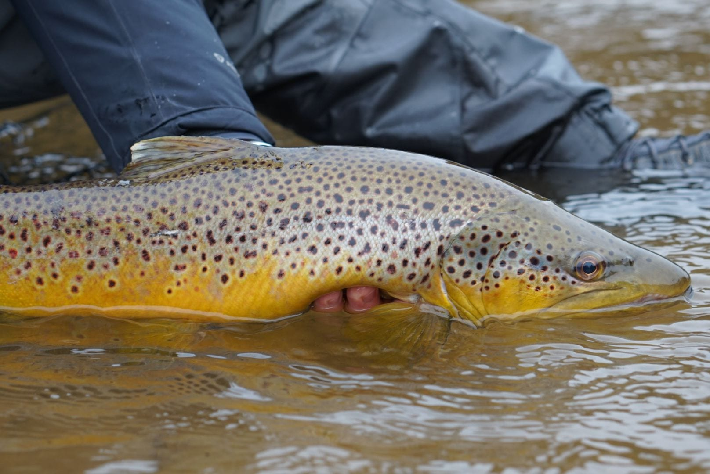
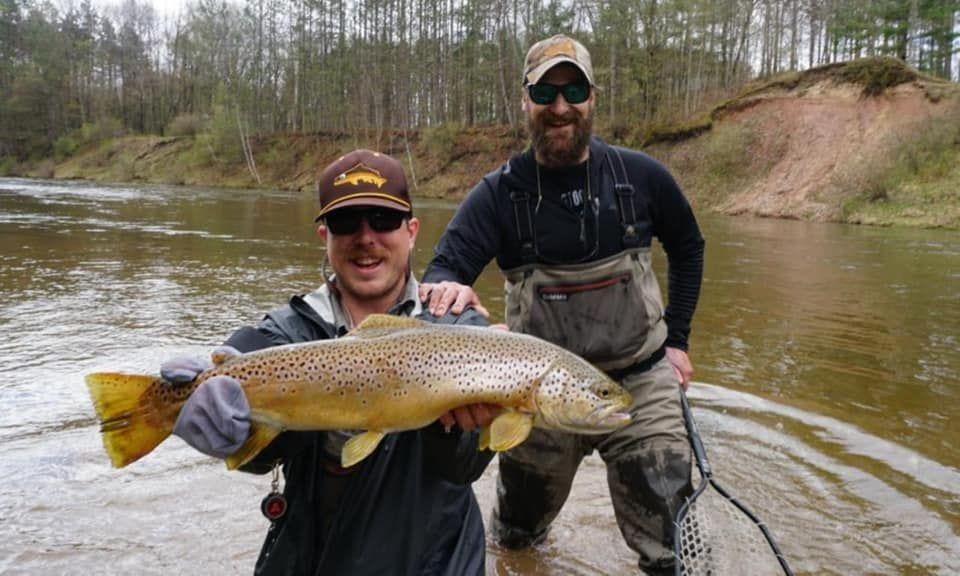
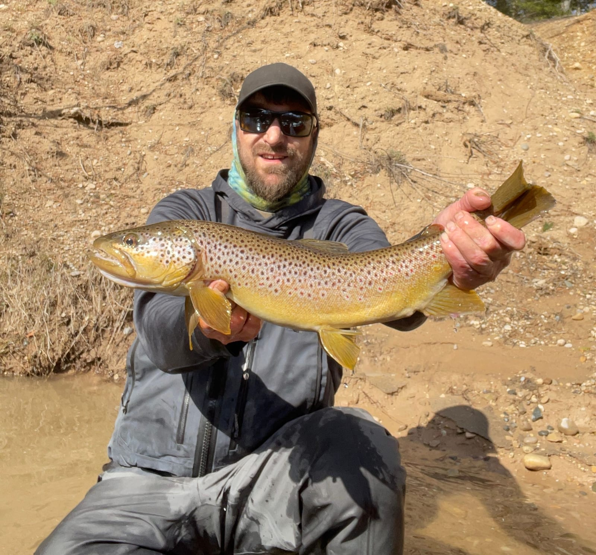
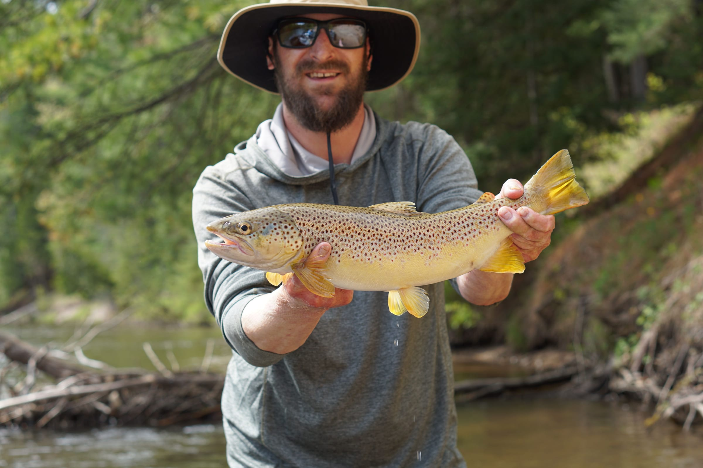
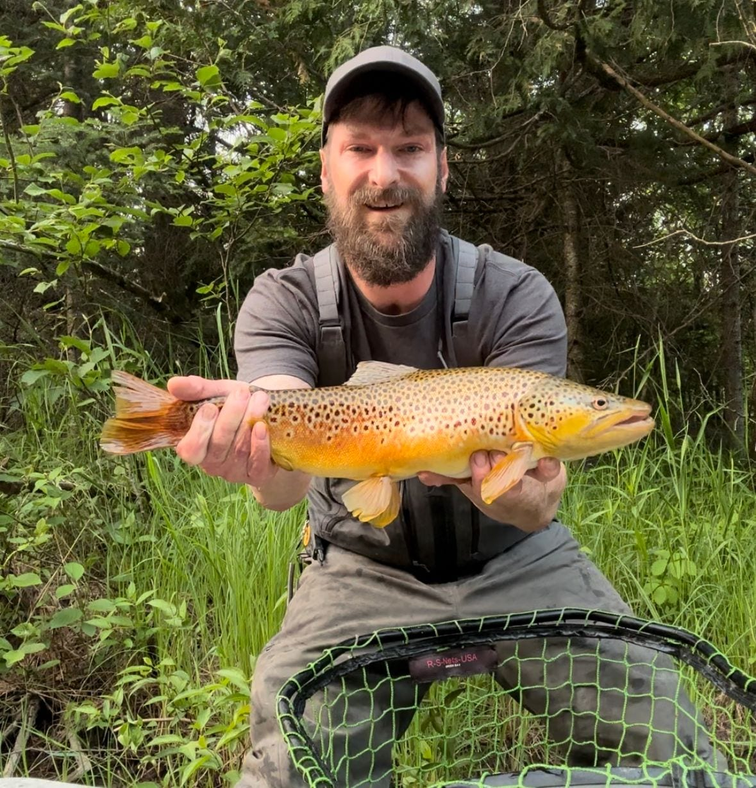

Streamer & Dry Fly · Northern Michigan
Brown trout, from ice-out to the last warm evening.
Two very different ways to fish the same rivers. Streamers in the spring and fall, when the big fish are moving and willing to chase. Dry flies through the summer, when they come up. Fly gear or spin gear — your call.
Full day $495 · half day $375 · up to 2 anglers
Spring & Fall
Streamer fishing.
A full day of streamer fishing is a day spent covering water. You throw a big fly tight to the bank, strip it back through the wood, and do it again a few thousand times — and somewhere in there a fish that has no business eating a six-inch piece of rabbit fur tries to eat a six-inch piece of rabbit fur.
It covers a lot of river, and it reaches the fish that do not show themselves during a hatch. Spring and fall are the windows: cold water, aggressive fish, and nobody else on the river.
All gear, streamers and leaders are included. I also keep spin fishing gear on the boat, and I have no snobbery about it whatsoever — a jerkbait fished well catches enormous brown trout.



Late Spring – Summer
Dry fly fishing.

Classic Northern Michigan hatch fishing. A full day starts in the morning and usually lasts into the evening — start times move around depending on what the fish are doing, and I would rather put you on the water at the right hour than the convenient one.
Half days can be reserved for the morning or the evening based on availability. There is no shore lunch on a half day, but an evening half day runs into the last of the light, which is frequently when the fishing turns on.
All gear, bugs and leaders are included.
If you have never done this before, say so when you book. I have the right section of river and the right equipment for beginners, and you will get real chances at quality fish while you learn.


Rates
Same rates, either style.
Streamer or dry fly
All rods, reels, flies, streamers, leaders and terminal tackle included. Spin gear available on streamer trips. Gratuity not included. Cancellations require 48 hours notice.
Prefer to book by phone? Call or text (517) 388-6514.
Where we fish
South Boardman puts me within an hour of most major trout streams in Northern Michigan. Which one we run depends on your date, the water level, and what is hatching.
- Boardman River — the home water, right outside Traverse City
- Manistee River — big water, big fish, and the jet boat
- Jordan River — small, cold and full of surprises
- Au Sable River — a longer drive and worth it
Staying in Traverse City, Charlevoix, Petoskey or Manistee? There is a trip that works from where you are.
Trout FAQ
Before you book a day.
How do I book?
Two ways, both first-class: pick a trip and an open date on the booking calendar, or call or text me at (517) 388-6514. A $150 deposit reserves the date, and cancellations require 48 hours notice.
Do I have to fly fish?
No. Spin gear is available on streamer trips, and it catches big browns. Tell me what you would rather do when you book.
What is the difference between a streamer trip and a dry fly trip?
Streamer trips cover water: you cast a big fly to the bank all day and hunt aggressive fish, and they fish best in spring and fall. Dry fly trips are about hatches and rising fish, generally late spring through summer, and are more about timing and presentation than mileage.
Is lunch included?
Yes on full-day river trips. Half days do not include lunch.
Can I book a half day in the morning or the evening?
Yes — half day dry fly trips can be reserved for either morning or evening based on availability. An evening half day runs into the last of the light, which is often when the fish come up.
Which river will we fish?
It depends on the date, the water level and what is hatching. I am within an hour of most major trout streams in Northern Michigan — the Boardman, Manistee, Jordan and Au Sable among them — and I will put us on the one that is fishing.
Other trips

Night Mousing
Big rodent patterns, full dark, the largest browns in the system. 8 PM to 3 AM.

Manistee Salmon
Kings and coho on the jet boat, on cured bait, from late summer into fall.

Family Panfish Trips
Summer bluegill on quiet lakes, for kids and families. No casting to learn.

Perch & Ice Fishing
Fall jumbo perch on Torch Lake, then hard water from first ice through March.
Photo Gallery
Every fish photo on the site, sorted by the water it came out of.
Book Your Trip
Book a day on the river.
Tell me roughly when you are up here and what you would like to fish, and I will tell you honestly what your best option is.
Prefer to book by phone? Call or text (517) 388-6514.
Or email clr517@hotmail.com, or send a message on Facebook.
Booking at a glance
- $150 deposit reserves your date
- 48-hour cancellation notice required
- All gear, flies & tackle included
- Lunch included on full-day river trips
- Fish cleaning available: $20 per limit
- Gratuity is not included in trip rates
- MI fishing license required (michigan.gov/dnr)
- Rates are per boat, up to 2 anglers, unless noted